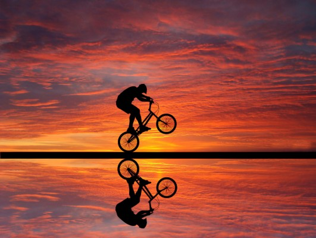

BMX
Aprendamos sobre BMX
Bienvenidos a mi pagina, en la cual podemos aprender mas sobre el bmx, tales detalles como:
- Que es el bmx
- Las reglas del bmx
- Sus modalidades
- Trucos

El bmx es:
El BMX es una disciplina del ciclismo que se practica con bicicletas cross con ruedas de 20 pulgadas de diámetro. El BMX abarca dos modalidades: carrera, cuyo objetivo es completar el recorrido en el menor tiempo posible, y estilo libre (freestyle), cuyo objetivo es realizar acrobacias
El BMX es un deporte extremo que debe ser practicado con la debida seguridad que nos brindan los siguientes objetos: casco, rodilleras, coderas, guantes de tela o plástico y zapatos anchos. La bicicleta tiene que estar en buenas condiciones para evitar accidentes.
BMX es la abreviación de Bicycle Motocross, una modalidad nacida en California (Estados Unidos) en 1969, cuando un joven de nombre Scot Breithaupt decide utilizar una bicicleta en una pista de Motocross, para imitar las habilidades de sus ídolos de este deporte. Un fabricante de bicicletas llamado Al Fritz, alertado por la alta demanda de los jóvenes y observando sus gustos, comenzó a fabricar bicicletas similares a motos.
Más concretamente, en 1977, la American Bicycle Association (ABA) se organizó como una entidad nacional para el crecimiento del deporte que se introdujo en Europa en 1978. En abril de 1981, se fundó la Federación Internacional de BMX, y el primer campeonato del mundo se celebró en 1982. Desde enero de 1993 el BMX ha sido integrado dentro de la Unión Ciclista Internacional (UCI).
De EE. UU. el naciente BMX pasó a Europa, siendo Inglaterra, Holanda y Francia los primeros en acogerlo e iniciar su desarrollo. En 1974 nace la NBL (Nacional Bicycle League) en los EE. UU. como la encargada de promover a nivel local, estatal, regional y nacional el BMX en este país. Algunos escritos remontan los orígenes a «... otro tipo de pruebas que tienen lugar al aire libre… el "ciclocross" (nacido en Francia a finales del siglo XIX y que deriva de los ejercicios militares), en la que los participantes siguen un recorrido a través de pistas embarradas y obstáculos, así como las de mountain-bike o ciclismo de montaña...». Actualmente, podemos definir el BMX como un deporte que se práctica en bicicletas pequeñas, que permiten al ciclista ganar mayor aceleración y precisión que con una bicicleta normal, usualmente las ruedas son de 20 pulgadas.